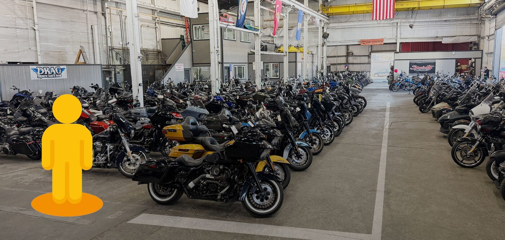

Clean the path
Make one inventory page easy to use.
A local Sacramento marketing team.
We built this audit for Specialty Motorsports.
Reach nearby people on Facebook and Instagram.
Real videos, photos and clear messages.
Get found through your Google Business Profile, site and blogs.
You offer 17 brand routes and clear ways to buy, sell or trade.
We checked how easily a new shopper can go from your website to a visit.

Your main site says 6:00 PM. A dealer-branded site says 5:30 PM.
Conflicting hours can make shoppers unsure about visiting.
Confirm who owns the second site. Align both sites and your Google hours.
Trade-in, payment and chat tools compete with the inventory page.
Extra choices can distract someone ready to ask about a bike.
Keep needed access tools. Simplify the extras and make inventory and contact easy to find.
Google’s simulated phone test scored 23/100. Its separate real-visitor report passed.
Heavy images may slow shoppers on weaker connections.
Trim images and extra scripts. Retest while keeping the passing real-user result.
Make one inventory page easy to use.
Create short ad clips for nearby shoppers.
Track calls and inquiries. Improve what works.
Choose one type of bike. Then let’s agree on the first page fixes and video ideas.